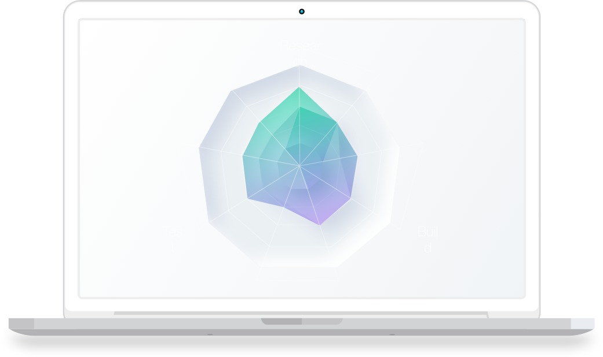

Scroll down for project info.
Concept to create visibility and transparency in career transformation.
Designed for the student experience, while creating business opportunities to enhance outcomes and future proof education.
Meet Quinn - a student who enters the program with a background in fashion, excited to explore the world of UX. Now in the final weeks, it's time to wrap up portfolios, prepare for interviews, and plan next steps.
That's when Quinn realizes, at the finish line looking back, it's hard to see where they started. The whole journey is a bit of a blur, and it's not easy to measure or articulate a blur.
Each cohort, I met students like Quinn. Students who couldn't quite see the transformation, how that translated to future potential, and what they should do next. I discovered that my guidance of "I learned this much in 12 weeks, imagine what's possible in 1 year." meant very little, if this much was invisible.
Competency Framework (with Before/After)
In Winter 2020 I concepted the UX Competency Framework, inspired by the week 12 self-assessment, and radar charts implemented in design teams.
Built with Google Forms and Sheets, V1 could provide students and educators a visualization of career transformation from Week 3 to Week 12.
With iteration and scalability in mind, the design could also support the Week 12 post-program goals, as well as additional snapshots.

Artistic representation of future state